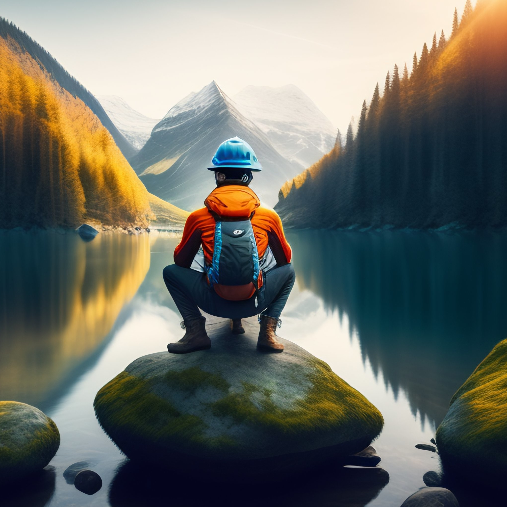

Paz Nation - Discord
Présentation du jeu
Un jeu ouvert à toutes et tous, seul ou avec des amis
Simulation
 Dans ce monde de Paz Nation, la planète sur laquelle les joueurs établissent leurs cités est en réalité une simulation avancée créée par une technologie inconnue.
Les joueurs ont été transportés dans cet environnement virtuel et prennent le rôle de dirigeant d'une cité, chargé de gérer les ressources, les relations internationales et les événements qui se produisent.
Dans ce monde de Paz Nation, la planète sur laquelle les joueurs établissent leurs cités est en réalité une simulation avancée créée par une technologie inconnue.
Les joueurs ont été transportés dans cet environnement virtuel et prennent le rôle de dirigeant d'une cité, chargé de gérer les ressources, les relations internationales et les événements qui se produisent.
Terre virtuelle
 La simulation a été conçue pour imiter la Terre en termes de ressources naturelles, de climat, de géographie et d'autres aspects qui influencent la gestion de la société.
La simulation a été conçue pour imiter la Terre en termes de ressources naturelles, de climat, de géographie et d'autres aspects qui influencent la gestion de la société.
L'équipe de développement à passer des dizaines d'heures dans des recherches pour que Paz Nation soit le plus fidel à notre monde réel.
Les ressources sont générées par la technologie de simulation, qui permet aux joueurs d'avoir un accès illimité à celles-ci.
La simulation est conçue pour simuler un grand nombre d'éléments de la société, y compris la gestion de l'énergie, de l'eau, des déchets et de la nourriture.
Par exemple, la démographie est calculé avec des fonctions mathématiques utilisées dans les grands organismes de statistiques.
Maître de vos décisions...

Les joueurs peuvent interagir avec la simulation en construisant des bâtiments, en produisant de la nourriture et d'autres ressources, en gérant l'économie et les relations diplomatiques avec d'autres cités.
Il y a plus d'une dizaine de bâtiments à construire pour produire autant de type de ressources différentes.
Cela va des mines pour extraire des métaux aux raffineries pour le carburant en passant par les centrales biomasse pour générer de l'éléctricité.
Les joueurs doivent gérer efficacement ces ressources pour maintenir la croissance de leur ville.
Ils peuvent également explorer la planète virtuelle pour découvrir de nouvelles sources de ressources et des terrains à exploiter.
En fonction de la région de votre cité, votre environnement sera composé uniquement de certains biomes, qui sont plus ou moins fournis en ressources.
Il faudra donc gérer astucieusement votre approvisionnement pour ne manquer de rien.
Par exemple, les régions du grand Nord ne peuvent pas produire de nourriture mais sont riches en ressources fossiles.
... ou pas !
 La simulation est capable de simuler des événements tels que des épidémies, des catastrophes naturelles et des conditions météorologiques, ce qui permet aux joueurs de développer des stratégies pour y faire face et pour prévenir de tels événements à l'avenir.
La simulation est capable de simuler des événements tels que des épidémies, des catastrophes naturelles et des conditions météorologiques, ce qui permet aux joueurs de développer des stratégies pour y faire face et pour prévenir de tels événements à l'avenir.
De plus, les risques ne sont pas que d'ordre environnementaux mais peuvent être aussi économiques et diplomatiques.
En effet, des cités autonomes sont gérés par la simulation et offre des évenements inattendus comme l'explosion du cours d'une ressource à la bourse mondiale ou des menaces de guerre.
Ces évenements ne sont qu'épisodique mais ne doivent pas être délaissés car ils peuvent changer complétement le cours de votre parti !
Plus qu'un simple bot Discord
Au-delà de l'aspect de divertissement, la simulation de Paz Nation a été conçu pour fournir une expérience de jeu immersive et éducative qui peut aider les joueurs à mieux comprendre les problèmes géopolitiques actuels et à développer des compétences en matière de gestion de ressources, de prise de décision, de planification stratégique et de collaboration.
En somme, la simulation de Paz Nation offre une expérience de jeu unique et immersive qui permet aux joueurs d'explorer leur créativité et leurs compétences.